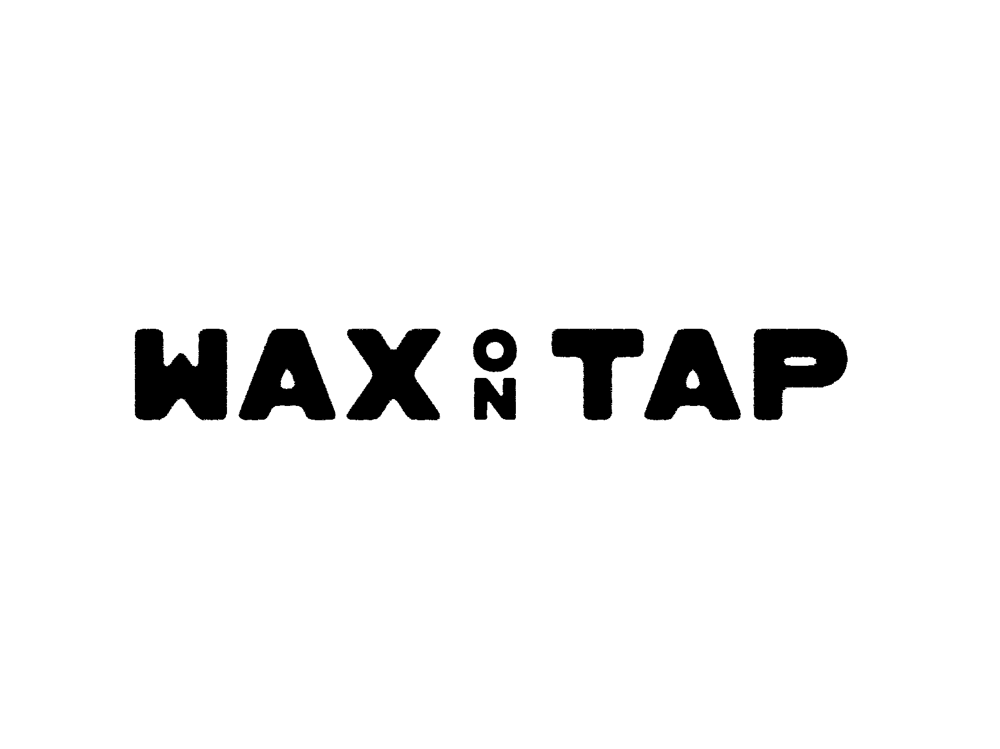

GEORGEASKAROFF.
Researcher in AI governance,
risk & public decision-making.
01 / About
How do institutions understand risk and make decisions under uncertainty?
I am a researcher interested in how institutions understand risk and make decisions when the evidence they rely on is incomplete, contested or produced by others. My current work focuses on frontier AI governance, including safety evidence, evaluation and public accountability. I aim to translate this research into practical improvements in policy and oversight.
I hold an MPhil in Global Risk and Resilience from the Centre for the Study of Existential Risk at the University of Cambridge and an MA in International Relations from the Department of War Studies at King’s College London, both awarded with distinction. My earlier work spans national risk governance, international security and political thought.
02 / Selected research
& writing
03 / Projects
Outside research, I work in independent music.
Independent record label
Co-founder of an independent electronic music label focused on sustainability and lower-impact vinyl production.
London record fair

Co-founder of a community-led London record fair bringing together independent record sellers, labels and DJs.
04 / Contact
Let’s talk.
Feel free to get in touch about research, collaboration, speaking or other opportunities.